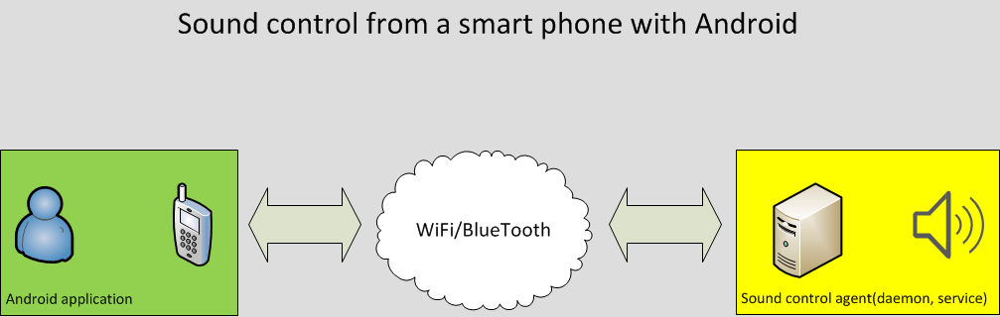

This project is for sound volume control of a desktop(laptop) from an Android device
Features:
- control the desktop's sound volume from an Android device by WiFi and BlueTooth
- saving controlled desktops names in the Android device
- the project is open source and FREE for using and changing
Requires:
- Linux system: with ALSA support and Gnome(only for using the GUI daemon control program)
- Android device with WiFi(The minimal Android version 2.2)
The project consists of two parts:
- The Android application Soundroid from the Google Play
- The Linux daemon and the program for controlling the daemon(GUI), for connecting with the Android application.
The daemon can be run stand alone or as a task of scheduler(e.g. cron or fcron)
